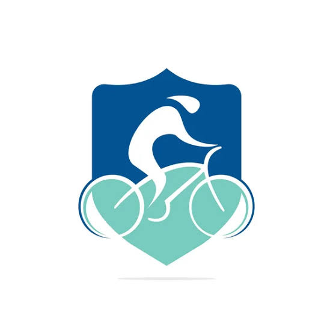
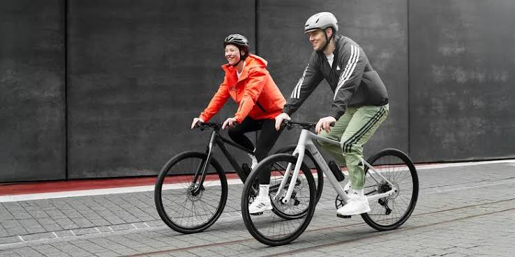
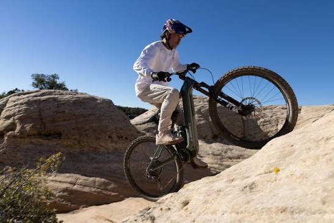

Bienvenidos a Rueda Libre, tu espacio de confianza para encontrar la bicicleta ideal, recibir mantenimiento experto y equiparte para cada ruta. Súbete, prepárate para rodar sin límites y descubre una comunidad que comparte tu misma pasión en el camino.

Somos un negocio dedicado al alquiler de bicicletas para personas que desean movilizarse, hacer ejercicio y disfrutar de diferentes recorridos, ofrecemos bicicletas urbanas y de montaña y rutas guiadas para disfrutar de nuevas experiencias y nuestros servicios incluyen opciones para diferentes necesidades y preferencias, con atención personalizada para nuestros clientes.
Bicicletas ideales para desplazamientos por la ciudad. Son prácticas y cómodas para realizar recorridos urbanos.

Bicicletas diseñadas para recorrer caminos rurales y terrenos irregulares. Incluyen casco y candado para mayor comodidad durante el recorrido.

Recorridos organizados para descubrir nuevos lugares en compañía de un guía. Una alternativa para disfrutar de la naturaleza y conocer diferentes rutas. Consulta la tabla de rutas.